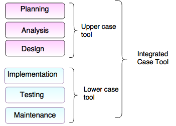

CASE ehk tarkvara raaltehnoloogia
CASE on arenduskeskkond, mis võimaldab automatiseerida, hallata ja lihtsustada süsteemiarenduse protsessi.
CASE-vahendid aitavad automatiseerida tegevusi süsteemiarenduse elutsükli erinevates faasides.
CASE-vahendid:
Ülemise taseme CASE-vahendid(upper CASE-tools)
Alumise taseme CASE-vahendid(lower CASE-tools)

Kasutatud materjal
CASE